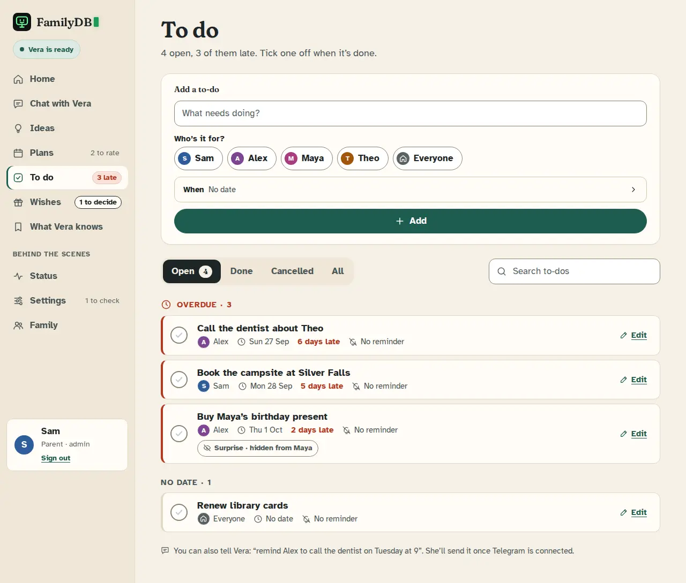
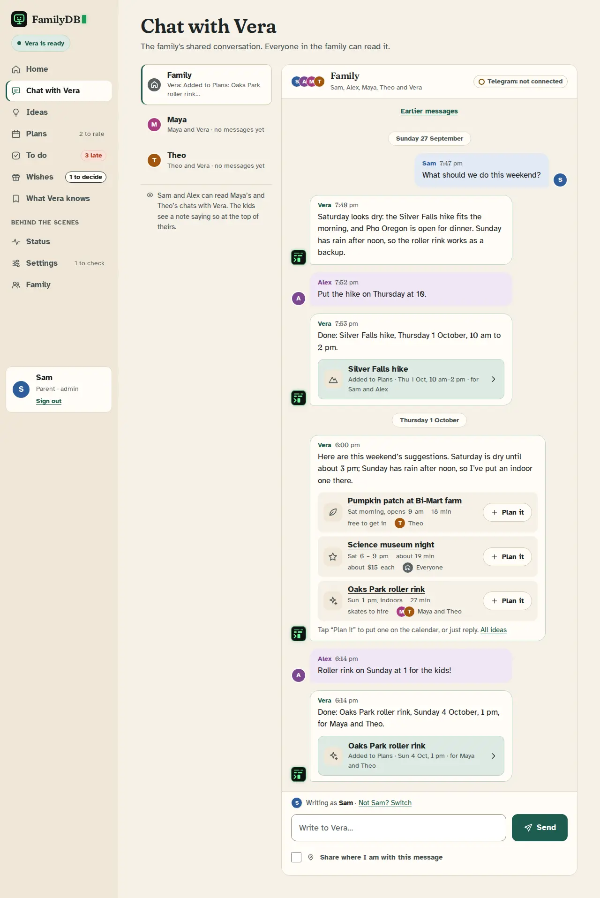
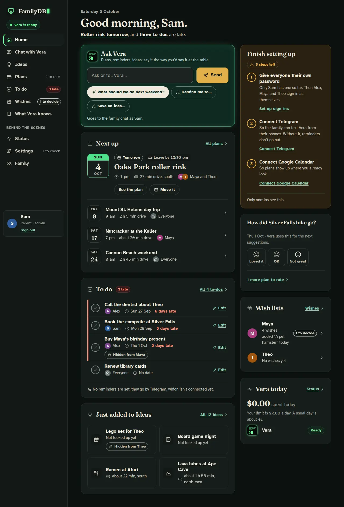
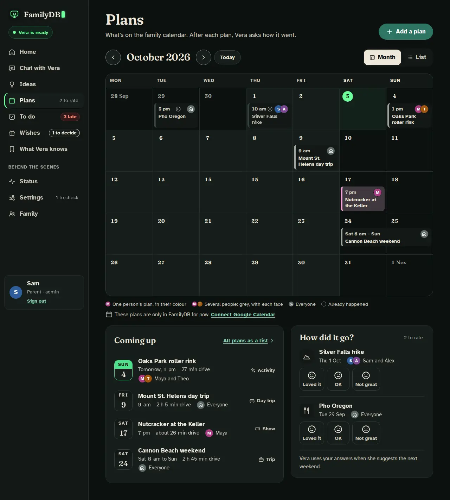
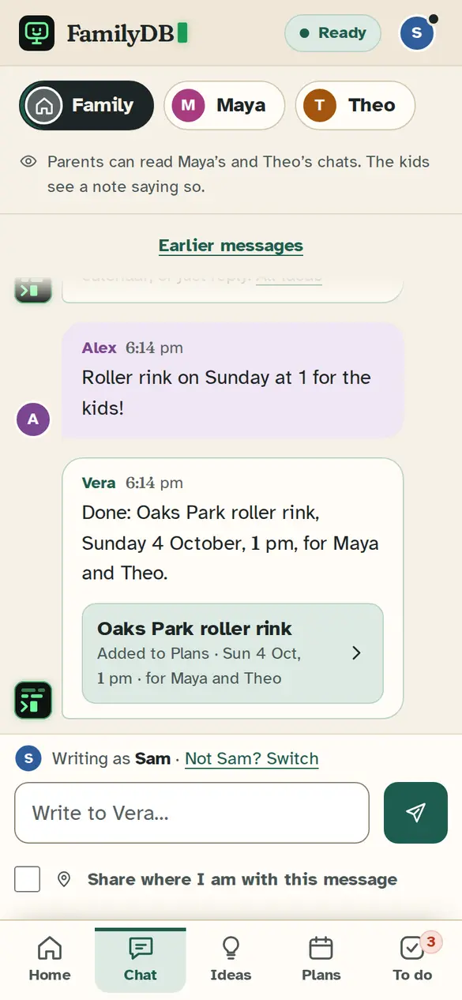
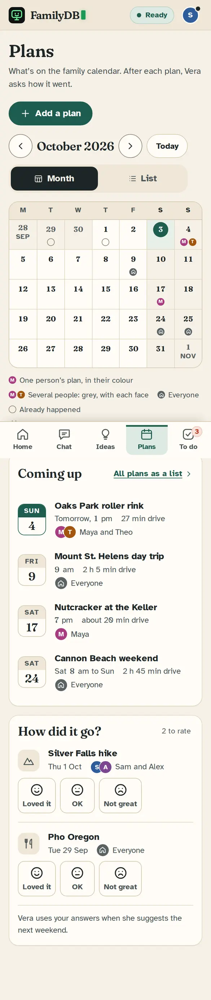
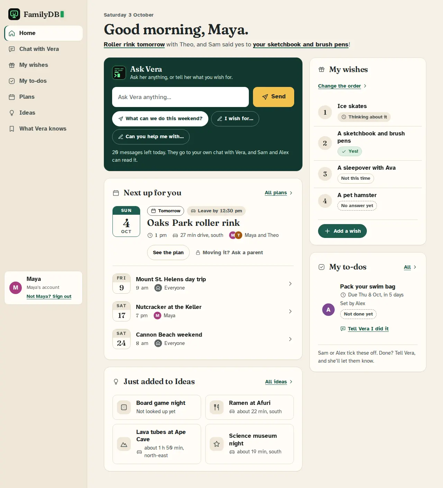
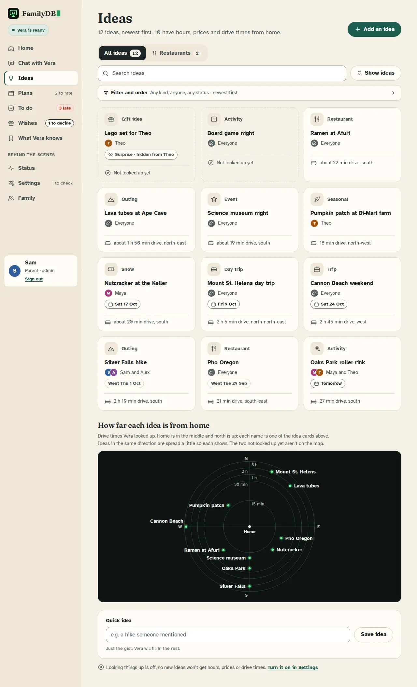

Kitchen Table, as a calendar
The same interface, every page, word and layout kept, with the look moved from recipe site to home calendar. Two designers took it two ways; the current look is first for comparison. Each shot shows the first screen; press “Whole page” under a shot to see it all.
As it is now
Kitchen Table
Cream paper, beige lines, soft serif headings (Fraunces), forest green with a sun-yellow Send.
The interface you said is nearly perfect, with the look that reads like a recipe or gardening site.
Desktop · Day




Desktop · Night


Phone




For a kid, and Ideas


Take 1 · the family calendar on the wall
Kitchen Wall
A bright, ruled grid where dates and times are the main material: today is green, and every other colour is a person. One-person plans are solid blocks in that person’s colour.
Headings, dates, times and money in Manrope, with bold wide figures you can read across the room. Date tiles are calendar pages with an ink weekday band.
Desktop · Day


Desktop · Night


Phone


For a kid, and Ideas


Take 2 · a calendar app
Today Line
Kitchen Table’s pages set like the family’s calendar app: a cool, gridded surface, one green that means “now”, and events marked the calendar way with a colour bar and a light tint.
Headings, dates, times and money in Inter, the open cousin of the fonts phone and desktop calendars use. Words are Atkinson, time is Inter.
Desktop · Day


Desktop · Night


Phone


For a kid, and Ideas


How they differ
What both did: dropped the soft serif (the biggest recipe-site tell), the cream paper and the yellow. Both use a cool grey page, white cards, hairline grid lines, tighter corners, green for today, and the Ask card as dark glass with a lit Send. The body text is still Atkinson, for the kids.
Kitchen Wall is louder and more glanceable: Manrope’s wide figures, ink bands on every date tile, and one-person plans as solid colour blocks. It’s the more “family hub” of the two, but a busy month can get loud.
Today Line is quieter and more like the calendar apps on the family’s phones: Inter, tinted events with a colour bar, and green only on today and the next plan. It’s the calmer of the two, but Inter on grey is many apps’ house style.